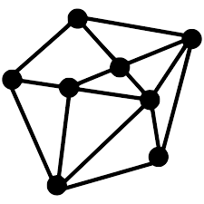
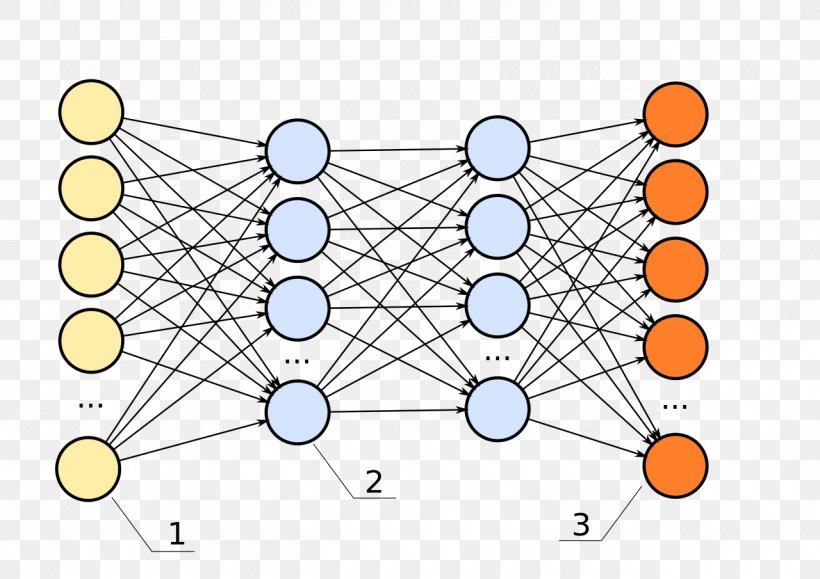
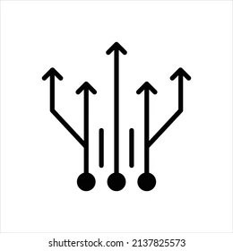
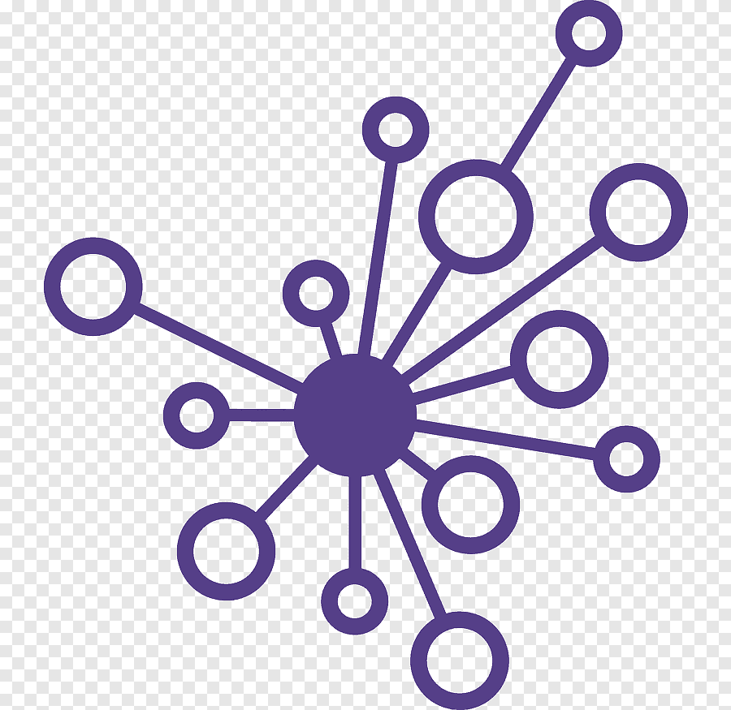
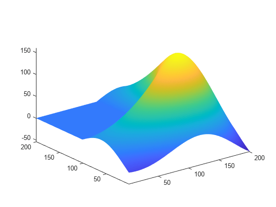

Skills
Algorithms and Data Structures 
One of my strengths in Computer Science is the design of algorithms and solving hard algorithmic problems.
Basic Web Programming

I built this website out of basic HTML and CSS. I also have a basic understanding of ReactJS as well.
A.I and Machine Learning 
Mainly interested in Algorithmic A.I and Constraint Satisfaction but I have dabbled with Big Data Projects before.
Parallel Programming 
I picked up Parallel Programming because it can potentially help optimise processes and reduce latency in software. Parallel Algorithms can also be more efficient than Sequential Algorithms too.
Data Cleaning and Analysis 
Datasets often have erroneous or null values which may cause trouble during model training or analysis. Data cleaning will eliminate such problems. Following cleaning, I use Pandas, Matplotlib and Seaborn to visualise and try to find patterns in data.
App Development
I completed an Android Software Development project, using Android Java, Python and Flask and tested my application using Mockito, JUnit and Pytests.
Mathematical Modelling 
This includes reducing a problem into a mathematical problem, linear programming, network optimisation using algorithms and other optimisation techniques. I am also well-versed in Statistical Methods such as regression and learning.
Cryptography

I have had a keen interest in Cryptography since Primary School due to its connections with Algebra, Number Theory as a whole. I find Cryptography puzzles in CTFs easiest and love using Cyberchef developed by GCHQ.
Teaching

I have experience teaching tuition in Mathematics since my JC days and even post NS. I can teach Secondary/IP Mathematics and JC H2 Maths and F-Maths.
Chinese Chess (XiangQi)
I play Chinese Chess competitively in Secondary School but since NS, I have been rather inactive. However, I still practice to hone my craft.